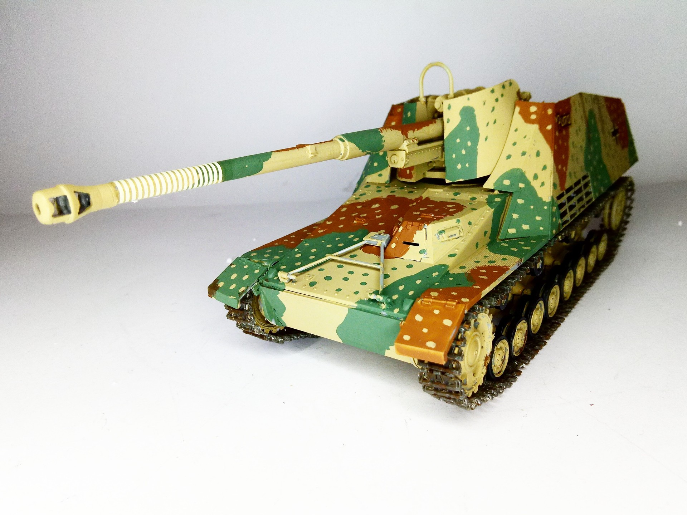
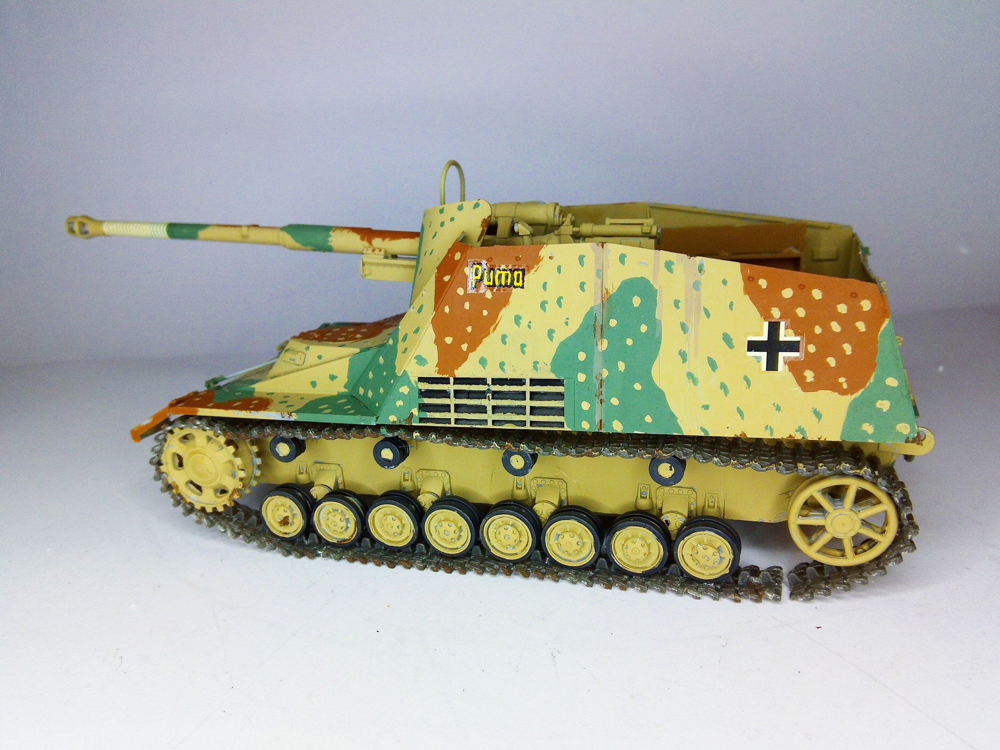

Mezzi militari · scale model archive
8,8 cm PaK 43/1 auf Fgst. Pz.Kpfw. III/IV (SF) Sd.Kfz. 164 'Nashorn'
8,8 cm PaK 43/1 auf Fgst. Pz.Kpfw. III/IV (SF) Sd.Kfz. 164 'Nashorn' — Kit: Trumpeter, Scale: 1/35. #1/35 #Trumpeter #Nashorn

Photo gallery

English description
#1/35 #Trumpeter #Nashorn